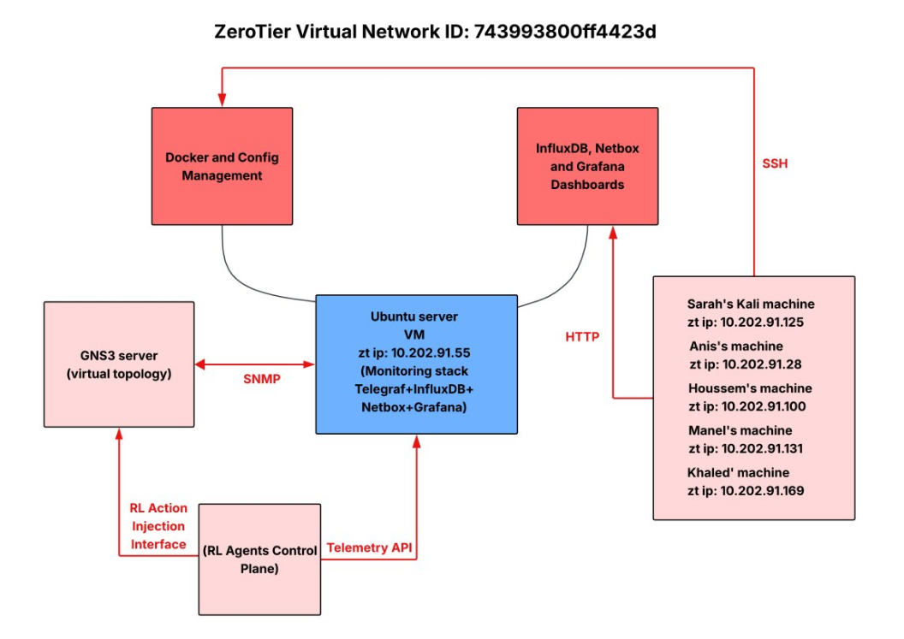
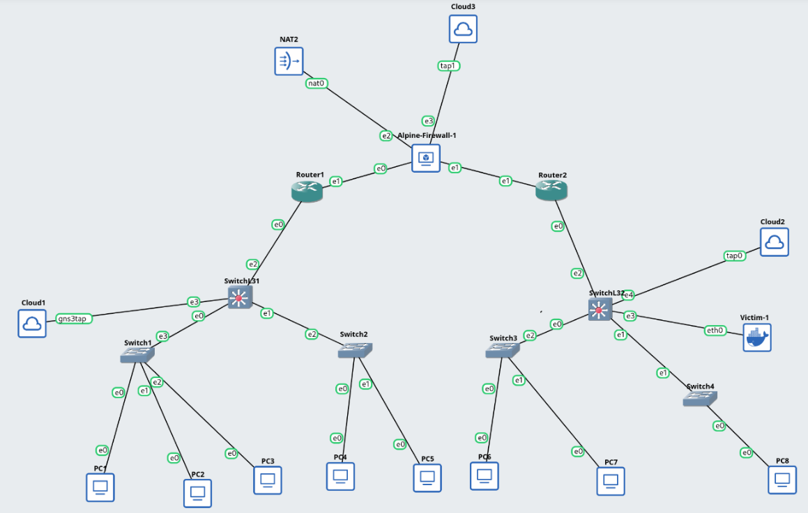
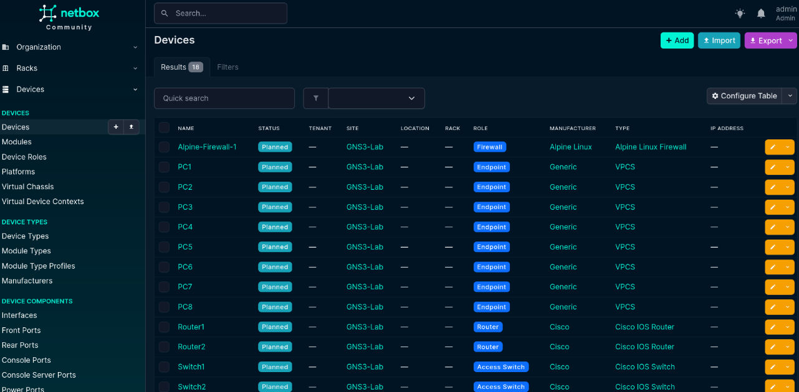
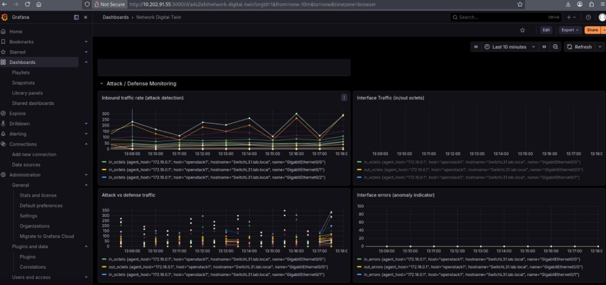

Cyber-Arena, Network Digital Twin with Adversarial RL
Design and Implementation of an Intelligent Cybersecurity Simulation Platform
TL;DR: A Network Digital Twin with Adversarial Reinforcement Learning for autonomous cybersecurity simulation. 18-node GNS3 enterprise network · 5 VLANs · 2 competing DQN agents (Red attacker / Blue defender) · 18 attack actions · 18 defense actions · 4-stage kill chain · live telemetry via Telegraf → InfluxDB → Grafana · 300 training episodes · 5 manual baseline attacks validated across a real 5-hop external path.
Team & Supervision
- Brahmi Sarah Kaouther: Team Lead / GNS3 Server Host / Topology / Infrastructure / RL Environment / Monitoring Stack (SNMP → Telegraf → InfluxDB → Grafana)
- Manel Mostefaoui: Network Architect / Attacker / Monitoring (Netbox)
- Benikhlef Houssam: RL Agents Control Plane
- Anis Boulfoul: Monitoring Stack (Ansible → Grafana)
- Khaled Guessaoui: Team Member
- Supervisor: Mohamed Bedjaoui
Team Lead, My Contribution
I hosted the GNS3 server and full network topology on my machine, including 18 nodes, a 3-tier architecture, 5 VLANs, OSPF, and the firewall. I set up the ZeroTier virtual LAN connecting all five team machines and established the external attacker path. I developed the reinforcement-learning environment used by the attack and defense agents and implemented the telemetry and monitoring pipeline from SNMP collection through Telegraf and InfluxDB to Grafana, integrating network observations into the experimental environment. I also contributed to the manual penetration testing phase and network topology verification.
Context and Motivation
Traditional cybersecurity tools are rule-based: they detect known attack patterns but fail against novel or adaptive threats. Meanwhile, enterprise networks are growing in complexity, making manual security monitoring increasingly impractical.
This project addresses both challenges by combining two emerging technologies:
- Network Digital Twin: A live virtual replica of a network that mirrors its real-time state, enabling safe testing and analysis without touching production.
- Adversarial Reinforcement Learning: Two AI agents that learn attack and defense strategies autonomously through trial and error, discovering strategies that rule-based systems would miss.
Project Objectives
- Build a realistic virtual enterprise network in GNS3 (18 nodes, 3-tier architecture)
- Create a digital twin monitoring stack with real-time metrics visualization
- Document the network inventory using NetBox with automatic GNS3 synchronization
- Conduct manual penetration testing to establish baseline attack results
- Establish a real external attack path via ZeroTier routing
- Train RL attacker and defender agents that operate on the live network
- Compare manual attack results with RL agent performance
System Architecture
The platform consists of four interconnected components linked via a private ZeroTier virtual network (Network ID: 743993800ff4423d), allowing all five team members to collaborate remotely as if on the same LAN.

Component Distribution
- GNS3 Server : Sarah's Kali Machine: Hosts GNS3 server v3.0.5 on port 3080, runs all 18 virtual network nodes (routers, switches, firewall, PCs, victim VM).
- Ubuntu Server VM : Anis's Machine: Hosts the complete monitoring stack in Docker containers (Telegraf, InfluxDB, Grafana, NetBox, PostgreSQL, Redis). Telegraf polls GNS3 L3 devices every 60s via SNMP. A systemd service (
gns3_netbox_sync.py) auto-syncs topology into NetBox. - RL Agents Control Plane : Houssem's Machine: Runs the Python attacker and defender RL agents, pushes actions to GNS3 via REST API, and reads live state from InfluxDB.
External Attack Path
A key feature of this platform is the ability for external attackers to reach the GNS3 internal network from outside via ZeroTier routing. The full 5-hop path was confirmed via traceroute.
| Hop | Device | IP |
|---|---|---|
| 1 | Manel's Kali (attacker) | 10.202.91.131 |
| 2 | Sarah's laptop (ZeroTier) | 10.202.91.125 |
| 3 | Alpine-Firewall-1 | 192.168.122.181 |
| 4 | Router2 | 10.10.20.2 |
| 5 | Victim-1 (target) | 10.20.20.200 |
Network Topology
The GNS3 network follows the standard enterprise 3-tier design:
- Core Layer: Alpine-Firewall-1 connects to internet (NAT2/Cloud3) and distributes to both router branches.
- Distribution Layer: Router1 + SwitchL31 (left branch), Router2 + SwitchL32 (right branch), OSPF area 0.
- Access Layer: Switch1-4 connect end devices (PCs and victim VM) via 802.1q VLANs.

VLAN Configuration (Verified Live)
| VLAN | Name | Subnet | Gateway | Hosts |
|---|---|---|---|---|
| 10 | PC1_PC2_PC5 | 192.168.10.0/24 | 192.168.10.1 | PC1, PC2, PC5 |
| 20 | PC3_PC4 | 192.168.20.0/24 | 192.168.20.1 | PC3, PC4 |
| 30 | VLAN0030 | 192.168.30.0/24 | 192.168.30.1 | PC6, PC7 |
| 40 | VLAN0040 | 192.168.40.0/24 | 192.168.40.1 | — |
| 50 | VLAN0050 | 10.20.20.0/24 | 10.20.20.1 | Victim-1, PC8 |
Firewall Static Routes
The Alpine Firewall maintains 8 static routes (persistent via /etc/local.d/routes.start) covering all VLAN segments, the default route, and the two internal /30 links between the firewall and each router.
Verified Connectivity
All paths were verified live: firewall ↔ routers, routers ↔ SwitchL3x (OSPF FULL state with DR/BDR election), PC gateways, cross-network routing, external Kali → firewall and Kali → Victim-1 (5 hops, ~15ms). Config persistence after restart was solved by writing startup configs directly to GNS3 project files.
Digital Twin, Monitoring Stack
A Network Digital Twin is a live virtual replica of a network that mirrors its real-time state. In this project:
- GNS3 Network = the "physical" network being twinned
- NetBox = structural twin (inventory, topology, IP schema)
- Telegraf + InfluxDB = behavioral twin (live metrics, traffic, CPU)
- Grafana = visual twin (real-time dashboard)
NetBox, Automatic Network Inventory
NetBox serves as the source of truth for the network inventory. A Python synchronization service polls the GNS3 v3 API every 60 seconds using OAuth2, and creates/updates all devices, interfaces, IP addresses, VLANs, and prefixes automatically.

Inventory summary: 1 site, 5 device roles, 4 device types, 18 devices (1 firewall, 2 routers, 6 switches, 8 PCs, 1 victim), 13 IP prefixes, 26 IP addresses.
Telegraf, Metrics Collection
Telegraf polls all L3 devices every 60 seconds using SNMP v2c, covering SwitchL31, Router1, Router2, and SwitchL32.
InfluxDB, Time-Series Database
InfluxDB stores all collected metrics in a time-series format optimized for high-frequency network data. Retention: 30 days. Bucket: network.
Grafana, Security Dashboard
The Grafana dashboard provides real-time visualization of network health and security events.
| Panel | Type | Metric | Security Purpose |
|---|---|---|---|
| Device CPU Usage | Gauge | snmp.cpu | High CPU = possible DoS |
| Interface Status | Stat | interface.status | 1=UP (green), 2=DOWN (red) |
| Inbound Traffic | Time Series | interface.in_octets | Traffic spike = attack |
| Interface Errors | Time Series | interface.in_errors | Error spike = anomaly |
| Attack vs Defense | Time Series | in + out octets | Agent impact visualization |

Ansible Automation Layer
An automation layer was built on the monitoring VM using Ansible, Cron, Prometheus, and Grafana. The system automatically collects configurations, operational state, and backup status from all managed network devices.
Managed targets (6): router-1, router-2, switch-13-1, switch-13-2, alpine-firewall-1, monitoring-vm-services.
Five playbooks run automatically every day via cron: Reachability Check (02:00), Configuration Backup (02:05), Network State Collection (02:10), VM Service Backup (02:15), Backup Status Generation (02:20).
Verified result: 6 managed targets, 6 devices with backups, 0 missing, Prometheus scraping working, cron scheduling active, Grafana dashboard operational.
Security Testing, Manual Penetration Testing
Before running the RL agents, manual attacks were conducted to establish baseline results and verify that the attack surface was properly configured.
Attack scenario: External attacker simulation. The attacker (Kali machine at 10.202.91.131) targets Victim-1 (10.20.20.200) from outside the GNS3 network, routing through ZeroTier → Sarah's laptop → virbr0 → Alpine-Firewall-1 → Router2 → SwitchL32 → Victim-1.
Victim VM Configuration
| Property | Value |
|---|---|
| IP Address | 10.20.20.200/24 |
| Gateway | 10.20.20.1 (SwitchL32 Vlan50 SVI) |
| OS | Ubuntu 22.04 LTS (Docker container) |
| SSH Service | OpenSSH (port 22) |
| Web Service | Apache 2.4.52 (port 80) |
| Weak User | victim / 123456 |
| Firewall | Disabled (ufw disabled) |
Attack Results
| Attack | Tool | Target | Result | Duration |
|---|---|---|---|---|
| Reconnaissance | Nmap | 10.20.20.200 | SUCCESS | 7s |
| Web Access | curl | 10.20.20.200:80 | SUCCESS | 1s |
| Web Scan | Nikto | 10.20.20.200:80 | SUCCESS | 30s |
| SSH Brute Force | Hydra | 10.20.20.200:22 | SUCCESS | 16s |
| Post-Exploit | SSH | 10.20.20.200:22 | SUCCESS | instant |
| DoS Flood | hping3 | 10.20.20.200:22 | SUCCESS | ongoing |
A manual Hydra attack cracking the "victim" user's password "123456" in just 16 seconds, attempt #1 in rockyou.txt. This establishes the baseline the RL defender must learn to prevent.
Key finding: All five attack types succeeded against the undefended victim VM. The SSH password was cracked in only 16 seconds. The full attack path traverses 5 network hops across ZeroTier, the Alpine firewall, Router2, and SwitchL32 before reaching Victim-1. This establishes the baseline that the RL defender must learn to prevent.
Reinforcement Learning Agents
Reinforcement Learning (RL) is a machine learning paradigm where autonomous agents learn optimal strategies through trial and error, receiving numerical rewards or penalties for every action they take within an environment. Unlike supervised learning, RL agents do not require labelled datasets, they learn entirely from the consequences of their own actions.
In this project, two RL agents compete inside a live GNS3 network digital twin in a two-player zero-sum adversarial game:
- Red Agent (Attacker): Learns to maximise damage to the network by executing a diverse set of 18 cyber-attacks across four strategic phases (reconnaissance, intrusion, lateral movement, impact).
- Blue Agent (Defender): Learns to minimise damage and maintain network availability using 18 defensive actions spanning immediate response, recovery, and proactive detection.
This adversarial self-play framework forces both agents to continuously adapt their strategies: as the Red agent discovers new attack sequences, the Blue agent must learn to counter them, and vice versa.
Environment Design
The RL environment follows the gymnasium.Env interface and is implemented across seven Python modules:
- gns3_connector.py : Network Interface (authenticates with GNS3 REST API v3 using JWT Bearer token)
- state_collector.py : State Observation (queries InfluxDB for real-time SNMP-collected telemetry)
- attack_executor.py : Attack Simulation Engine (one handler per Red agent attack type, 18 total)
- defense_executor.py : Defense Simulation Engine (one handler per Blue agent defense type, 18 total)
- environment.py : Main RL Interface (orchestrates the full simulation)
State Space
The observation vector has 80 dimensions, representing the live state of 10 monitored network interfaces across 8 metric groups:
| Index Range | Metric | Scale | Description |
|---|---|---|---|
| [0, 10) | Interface Status | {0, 1} | 1 = up, 0 = down |
| [10, 20) | Traffic Rate | log(1 + x) | Log-scaled in_octets |
| [20, 30) | Error Count | [0, 10] | Normalised in_errors |
| [30, 40) | CPU Usage | [0, 1] | Fraction of CPU utilisation |
| [40, 50) | Packet Loss | [0, 1] | Fraction of packets lost |
| [50, 60) | Broadcast Ratio | [0, 1] | Broadcast pkts / total pkts |
| [60, 70) | ARP Table Size | [0, 1] | Normalised ARP entry count |
| [70, 80) | Anomaly Score | [0, 1] | Deviation from normal baseline |
Action Space
Both agents have 18 discrete actions each. Unlike the traditional approach where Red and Blue simply toggle the same interfaces on and off, our system implements semantically distinct attack and defense types that mirror real-world cybersecurity operations.
Red Agent, 18 Attack Actions
Reconnaissance (Port Scan, Topology Mapping, Traffic Sniffing, Credential Theft), Disruption (Shutdown Link, MAC Flooding, ARP Poisoning, DDoS Simulation, CPU Exhaustion, VLAN Hopping, STP Attack, Shutdown Core Link, DDoS Core Router), and Persistence (Backdoor Creation, Config Tampering, Lateral Movement, Firewall Bypass, VLAN Pivot).
Each attack has two key parameters: Severity (0–1, controls how strongly the attack perturbs the environment) and Stealth (0–1, controls how much the attack raises the anomaly score). High-stealth attacks (e.g., traffic sniffing at 0.85) are nearly invisible; low-stealth attacks (e.g., DDoS at 0.30) cause an immediate spike in the anomaly score.
Blue Agent, 18 Defense Actions
Immediate Response (Port Isolation, MAC Blacklisting, Rate Limiting, ICMP Blocking, Firewall Rule Update, STP Guard Activation, ARP Inspection), Recovery (Restore Link, Traffic Rerouting, VLAN Reassignment, Config Restoration, Failover Activation, Full Network Lockdown), and Proactive (Honeypot Deployment, Anomaly Detection Alert, Dynamic ACL, Traffic Baselining, IDS Alert Response).
Each defense action specifies a counters list,the Red attack names it can neutralise. A defense action only succeeds if at least one of the attacks it counters is currently active. This forces the Blue agent to learn the correct attack-defense mapping rather than randomly applying defenses.
Kill Chain System
Real-world attackers follow a structured attack progression known as the Cyber Kill Chain. Our system implements a four-stage kill chain that the Red agent must learn to execute sequentially:
| Stage | Phase | Actions that Advance this Stage |
|---|---|---|
| 1 | Reconnaissance | Port Scan, Topology Mapping, Traffic Sniffing, Credential Theft |
| 2 | Intrusion | ARP Poisoning, VLAN Hopping, MAC Flooding, STP Attack |
| 3 | Lateral Movement | Lateral Movement, VLAN Pivot, Firewall Bypass, CPU Exhaustion |
| 4 | Impact | Shutdown Core Link, DDoS Core Router, Config Tampering, Backdoor Creation, DDoS Simulation |
Kill chain completion grants the Red agent a massive +50 reward bonus and immediately terminates the episode. If the Blue agent clears all active attacks before Red reaches Stage 4, Blue receives a chain interruption bonus of +30. This mechanism teaches the Red agent to chain actions strategically (scout first, then intrude, then spread, then strike).
Reward Function
Our system uses a multi-factor reward function. Red rewards range from +5 to +20 per attack type, with a core multiplier (×1.5–2.0) when hitting core infrastructure, impact scaling based on the number of affected interfaces, a stealth bonus when the anomaly score stays low, and a +2 per stage kill chain bonus. Triggering a honeypot carries a −30 penalty.
Blue rewards range from +7 to +15 per defense type, with a full recovery bonus (×2.0) when all interfaces are up and no attacks are active, a response speed bonus (+5 for 1-step, +2.5 for ≤3-step), and a +30 chain interruption bonus. A wasted move (defense used when no matching attack was active) carries a −2 penalty.
Scenario Variety
To prevent both agents from overfitting to a single starting condition, each episode begins with one of five randomly selected scenarios: Normal (clean state), Already Compromised (one random non-core interface already down), High Traffic (pre-loaded 50–85% CPU usage), Partial Defense (honeypot already deployed), and Stealth (near-zero anomaly baseline, Red must use high-stealth actions).
Training Algorithm, Deep Q-Network (DQN)
Both agents use Deep Q-Networks with several enhancements for stable training in adversarial settings.
Neural Network Architecture
Weight initialisation: Kaiming Normal (He initialisation). Loss: MSE between predicted Q-values and Bellman targets. Optimiser: Adam with learning rate 10⁻³. Gradient clipping: max norm 1.0.
Key Enhancements
- Target Network: A frozen copy of the Q-network is used for computing Bellman targets, synchronised every 10 training steps. Prevents oscillation during training.
- Exploration Strategy: ε-greedy exploration with exponential decay (ε₀ = 1.0, εₘᵢₙ = 0.05, decay rate 0.995).
- Experience Replay: Red uses a standard circular replay buffer (size 5000, batch 64). Blue uses Prioritised Experience Replay, 60% of each mini-batch is drawn from a "hot" queue of transitions recorded during active attacks (mean anomaly score > 0.30), and 40% from the normal queue. This trains the Blue agent disproportionately on situations where the network is under attack.
Self-Play Training Loop
Training follows an alternating Red-then-Blue self-play loop where both agents interact with the same environment within each episode step. Red acts first each step, then Blue observes the post-attack state and responds, simulating the real-world asymmetry where attackers have the initiative. Both agents train after every step (online learning), not just at episode end.
Training logs showing the kill chain stage, agent rewards, and the specific attacks and defenses used.
Logging and Metrics
The training loop produces thesis-ready logging across three outputs:
- CSV Episode Log: 18 columns per episode including scenario type, rewards, epsilon, losses, win counts, kill chain stage, chain interruption, time-to-detect, time-to-recover, network availability %, false-positive rate, honeypot triggers, and per-action success counts.
- JSON Per-Action Statistics: Cumulative success rate of every individual attack and defense type across all episodes.
- TensorBoard: Real-time training curves including Reward/Red, Reward/Blue, Epsilon, Loss/Red, Loss/Blue, Wins/Red, Wins/Blue, KillChain/StageReached, Network/Availability_pct, Blue/TimeToDetect, and Blue/TimeToRecover.
Results and Achievements
| Component | Status | Details |
|---|---|---|
| GNS3 Topology (18 nodes) | Complete | 3-tier, OSPF, 5 VLANs |
| Config Persistence | Complete | Startup configs in GNS3 project files |
| ZeroTier Collaboration | Complete | All 5 members connected |
| External Attack Path | Complete | Kali → ZeroTier → Firewall → Victim-1 |
| NetBox Inventory (auto-sync) | Complete | GNS3 API → NetBox systemd service |
| Telegraf Collection | Complete | SNMP polling every 60s |
| InfluxDB Storage | Complete | Time-series metrics stored |
| Grafana Dashboard | Complete | 5 security panels |
| Victim VM (SSH + Apache) | Complete | Docker, persistent start command |
| Manual Penetration Testing | Complete | 5 attacks, all successful |
| RL Environment | Complete | Python modules, live GNS3 integration |
| RL Agent Training | Complete | Training on live network |
Key Metrics
| Metric | Value |
|---|---|
| Network Nodes | 18 |
| VLANs | 5 |
| Agent Actions (Each) | 18 |
| State Dimensions | 80 |
| Kill Chain Stages | 4 |
| Episode Scenarios | 5 |
| Training Episodes | 300 |
| Max Steps per Episode | 20 |
Key Technical Challenges Solved
- GNS3 v3 API Migration: The GNS3 server runs v3.0.5 with a new /v3/ API prefix and OAuth2 authentication, requiring updates to all automation scripts from the documented v2 API.
- Config Persistence: QEMU nodes lost NVRAM on restart, solved by writing startup configs directly to GNS3 project filesystems files.
- Network Bridging: Connecting the external Kali attacker required iptables rules on the GNS3 host machine (LIBVIRT_FWI chain) and MASQUERADE on the Alpine firewall.
- Static Route Conflicts: Both routers had accumulated conflicting static routes that overrode OSPF learned routes, causing routing loop, identified via
show ip routeanalysis and resolved by removing all redundant statics. - Victim-1 Gateway: Docker container start command had wrong gateway (10.20.20.254 instead of 10.20.20.1), fixed in GNS3 node configuration.
- SwitchL32 Port Discovery: Victim-1 was connected to Gi0/3 (not the documented Gi1/0), discovered via CDP neighbor detail and ARP table analysis.
Limitations
- RL training requires GNS3 to be running, agents cannot train offline.
- SNMP polling interval (60s) may miss rapid attack bursts.
- Docker containers require explicit startup commands for IP persistence.
- RL agents currently operate on interface-level actions only, not real attack tools.
- ZeroTier connectivity is required for all team members to access the lab.
Future Work
- Integrate Real-World Tools: Have the Red agent directly call tools like
nmap,hydra, andhping3via the GNS3 API for a more realistic simulation. - Add IDS/IPS: Incorporate Snort or Suricata alerts into the Blue agent's observation space to train it using standard security tools.
- Scale: Add an OPNsense firewall and more complex multi-zone attack scenarios.
- Faster Detection: Reduce SNMP polling interval to 10s for better attack burst detection.
- Syslog Streaming: Integrate Syslog streaming from the Alpine firewall for faster event detection.
Conclusion
This project successfully demonstrates that a Network Digital Twin combined with Adversarial RL is a viable and powerful platform for autonomous cybersecurity research. Unlike purely simulated environments like CyberBattleSim, our agents interact with a real virtual network, making the learned strategies more applicable to real-world scenarios.
The manual penetration testing confirmed that the attack surface is properly configured (all 5 attacks succeeded across a real 5-hop network path), and the full monitoring stack (NetBox auto-sync, Telegraf, InfluxDB, Grafana) provides the observability needed for both human analysis and autonomous agent decision-making.
The project overcame significant real-world integration challenges, API version migrations, routing conflicts, config persistence, and network bridging, making it a robust and reproducible platform.
My contribution: I hosted the GNS3 server and full network topology on my machine (18 nodes, 3-tier architecture, 5 VLANs, OSPF, firewall). I set up the ZeroTier virtual LAN connecting all five team machines and established the external attacker path. I contributed to the manual penetration testing phase and network topology verification.